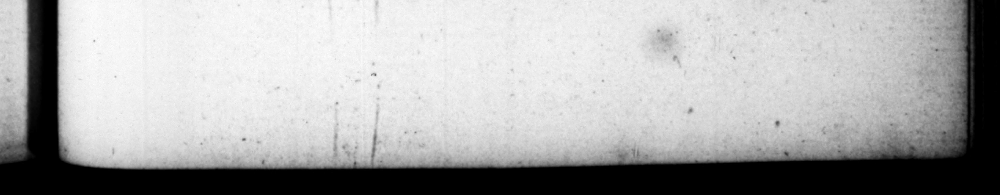

* ut ſibĩ quiſque pro conſuleret, ab amplexu & oſculo ſuo- dimific omnes, ſecretoque captato, binos co. dicillos exaravit ad ſororem conſolatorios, - Sed & ad Meſſalinam Neronis, quam matrimonio deſtinaverat, commendans reliquias ſuas & memoriam. Quidquid deinde epiſtolarum erat, ne cui periculo ant noxz apud victorem forent, concremavit. Diviſit & pecunias domeſticis ex copia præſenti. 11. Atque ita tus, intentuſque jam bord, tumultu inter moras exorto, Ut eos qui diſcedere, & abire optabant, corripi quaſi deferrores, detinerique ſenfir , Adjiciamus, inquit, vite & hanc notem, his ipſis, rotidemque verbis, vetu*.qque vim cuiquam Py —— . * » M. $ALVIUS OT facultate fieri: & in ſerum uſque patente cubiculo, ſi quis adire vellet, 2838 ſui præbuit, Poſt hec ſedata ſiti gelidz 2quz potione, arripuir duos pugiones, & explorata utriuſque acie cum alterum pulvino ſubdidiſſet, foribus adopertis ar&iflimo ſomno quievit, Er circa amor, demtim expergefactus, uno ſe trajecic ictu Hffa læ vam illam : irrumpentibuſque ad primum — mode celans, modo etegens plagam, exanimatus eſt: & celeriter (nam ita prece. perat) funeratus, Xx X VI ztatis anno, & xcy Ins perii die. 12. Tanto Othonis animo nequaquam corpus aut hahitus competiir, Fuiſſe enim traditur & modice ſtature, & male pedatus , ſcambuſque. Munditiarum vero pæne mulicbrium : vulſo corpore: galericulo capiti propter raxitatem capillorum adaptato & * 9e fall the writers wy And what e 47 ibn tea his domeſti . being SET and juſt 0 t bert bappened int put one. of for he is ſaid to have been commending to her his relicks mery. Then be burnt all "the iure he had by bim, to prevent the er and miſchief that might otherwiſe bem the conquer hai lefi 11. And new wpan the point of #tching himſelf, mean times 4 at uproar in the camp ; wherrupen finding that ſuch at were mak: had 4 al and detained wr ters, Let us add, ſays be, this night to our life, Theſe were his very werds. And then he gave orders that no vielence ſbould be offered to any body, and keeping bis chamber door open til] late 1 be, he gave all that had a mind at nig liberty to come and ſie him. After that quenching his thirſt with a draught of cold water, he took up two ponyards, and having examined the points of both them under his pillow, and ting. bes chamber ayer, ſl:pt 1 5 ti awdkiing about break of day, he run himſelf in the body under the left pap.” Jome.breaki into the room, upon the firſt groan be aue, he died ſoon after, ane while coviring, and another while expoſeng his wound to the view of the by-[tanders. His funeral ws: diſpatched immedi ately, according to his” own order, in the thirty eighth year of hi, age, and nineyy of his reign. | 12, The perſon and appearance of Ot h reſolution he d upon this oc 7 low ture, ſplay-footed and bandy-legged. He was beſides effeminately nice in the care of bis perſon, the hair of his he cok away by the rot; and becauſe be was [omewhat bald, wore a kind a oF. be diauf- le to the mi no ways anſwerable to ces | =
